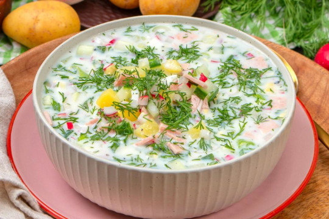

Rezept für Окрошка / russische Sommersuppe
Zubereitungszeit: ca. 40 Minuten
Schwierigkeitsgrad: Einfach
Portionen: 4
Zutaten
- 3 Eier
- 4 mittelgroße Kartoffeln
- halbe Salatgurke
- 1 Bund Radieschen
- 150g Fleischwurst
- 1 EL saure Sahne
- 500g Kefir
- 1l Mineralwasser
- 1 Schuss Zitronensäure und Essig
- Salz und schwarzer Pfeffer
- nach Belieben Petersilie und Dill
- nach Belieben Frühlingszwiebeln

Zubereitung
1. Schritt
Eier hart kochen. Kartoffeln mit Schale gar kochen. Beides abkühlen lassen, dann schälen und in kleine Würfel schneiden. Salatgurke schälen und zusammen mit den Radieschen raspeln. Frische Kräuter und Frühlingszwiebeln putzen und hacken.
2. Schritt
Alle Zutaten in einen Topf geben und gut vermischen. Kefir mit Mineralwasser in Verhältnis 1 : 2 (bis 1 : 3) auflösen. Die Kefir-Wasser-Mischung in den Topf geben und damit auffüllen. Mit saurer Sahne, Essig, Zitronensäure, Salz und Pfeffer abschmecken und servieren.